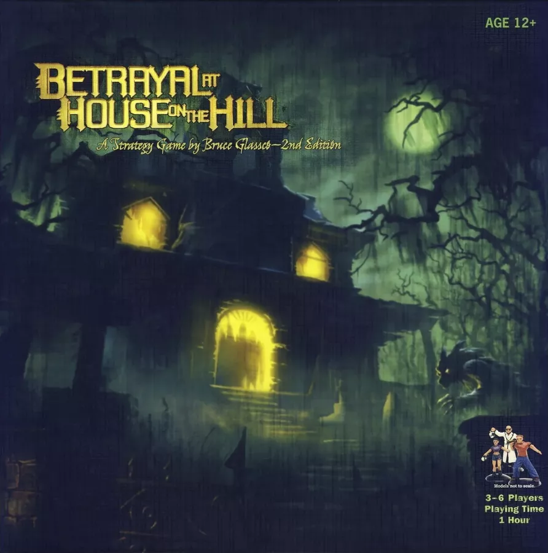

Board Game Review

Betrayal at House on the Hill
I am thrilled to share my thoughts on a spine-chilling and
suspenseful game that horror and mystery fans are sure to love: Betrayal at House on the Hill. Created by
Bruce Glassco and published by Avalon Hill, this game offers an enthralling experience that will keep
players on the edge of their seats as they navigate a haunted house teeming with secrets and unforeseen
twists.
Components
Betrayal at House on the Hill arrives in a sturdy box, containing a rulebook, 44 room tiles, 6 plastic
character miniatures, 6 character cards, 30 plastic clips, 8 dice, 1 turn/damage track, 13 omen cards, 22
item cards, and 45 event cards. The components are of decent quality, with the room tiles showcasing
intricate and atmospheric artwork that authentically conveys the eerie ambiance of a haunted house.
While the character miniatures are somewhat basic, they are functional and lend a pleasant tactile element
to the game. The character cards are designed to track each character's stats using plastic clips, which can
sometimes be awkward and may cause wear and tear on the cards over time.
Gameplay
Betrayal at House on the Hill is a cooperative game with an unexpected twist. Players take on the roles of
characters exploring a haunted house, unveiling new rooms as they delve deeper into the unknown. Each room
may contain items, events, or omens, which can either aid or impede players as they progress.
At a specific point in the game, the "haunt" is triggered, and one player typically becomes the "traitor"
who turns against the others. The particular scenario is determined by the combination of the room and omen
that initiated the haunt. With 50 distinct haunt scenarios, the game boasts exceptional replayability, as
each playthrough can unfold a completely different story.
Playing Time and Replayability
A game of Betrayal at House on the Hill generally takes around 60-90 minutes to play, depending on the
chosen scenario and the players' familiarity with the game. As previously mentioned, the game offers high
replayability due to the sheer number of possible haunt scenarios, ensuring that players will have a unique
experience each time they enter the haunted house.
Conclusion
Betrayal at House on the Hill is an entertaining and immersive game that offers a singular mix of
cooperative and competitive gameplay. With its haunting atmosphere, captivating mechanics, and high
replayability, it's an outstanding addition to any board game collection, especially for those who
appreciate horror-themed games or cooperative adventures with a twist. Assemble your friends, venture into
the haunted house, and brace yourselves for an unforgettable gaming experience filled with spine-tingling
surprises and heart-pounding tension.
Did you enjoy my review of this game? Check out one of my favorite board game reviews below or see a
list of my reviews!
More importantly, I'm always looking for new games to enjoy. Let
me know what you're currently playing!
My Favorites
Read why these board games are my all-time favorites!